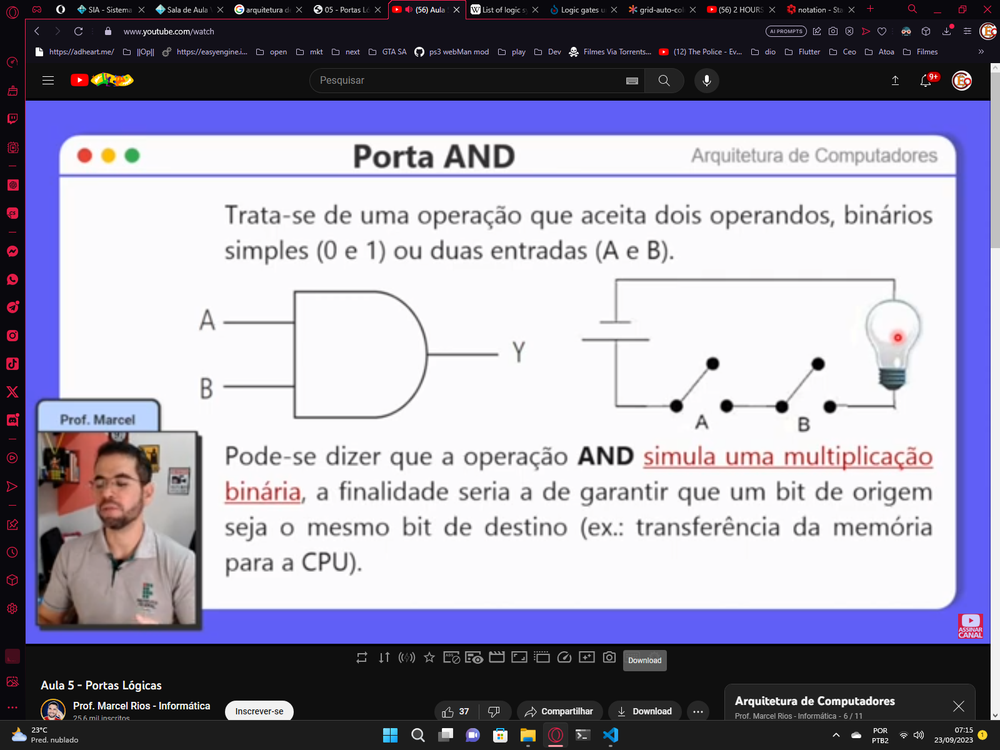
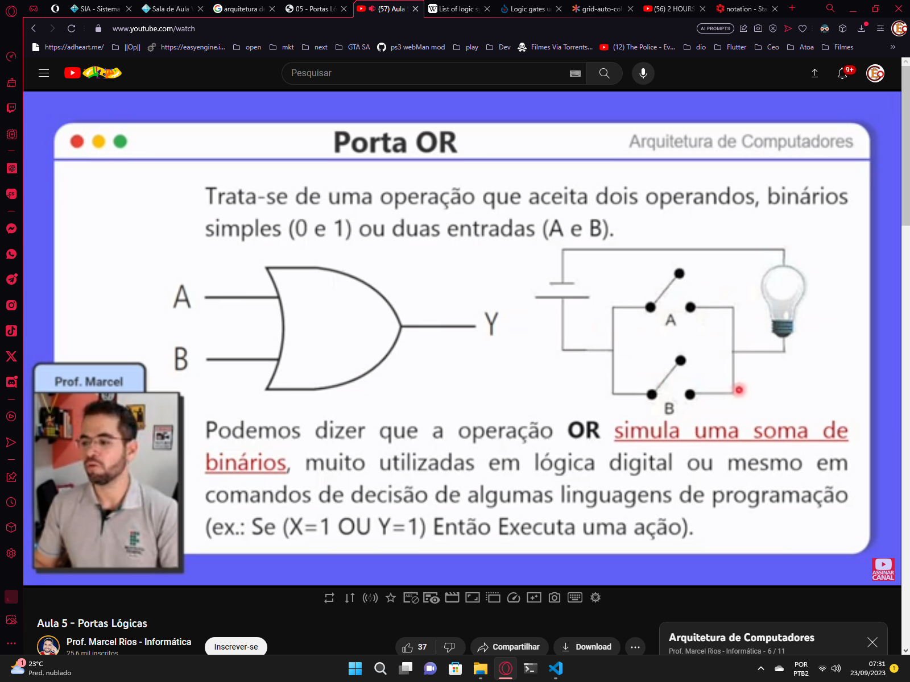
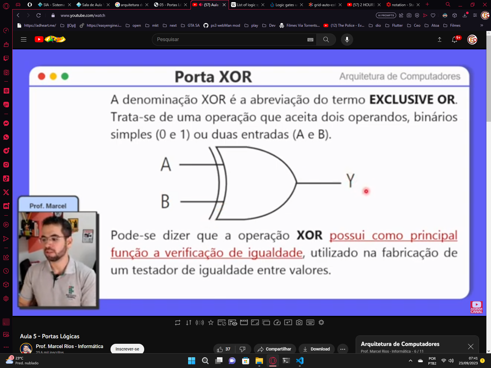
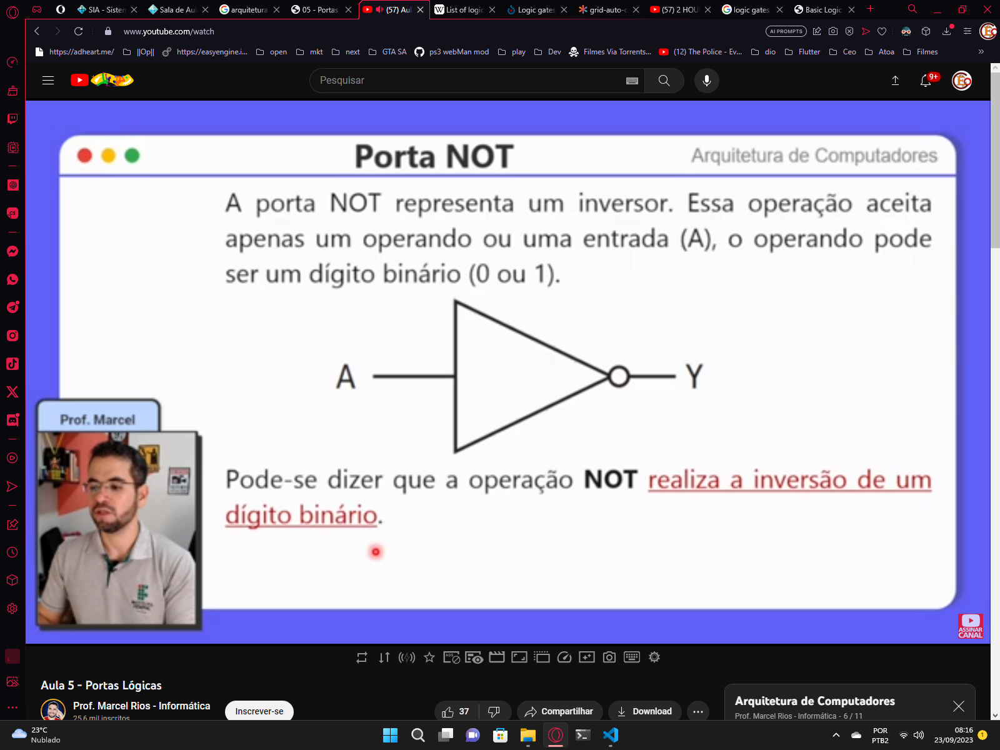

Portas Lógicas e suas Funções
Elementos eletrônicos
capacitores: armazenar e liberar carga elétrica, filtrar ruídos, estabilizar tensões, temporizar sinais
resistor: limitar a corrente elétrica medida em ohms (Ω), ajustando s níveis de tensão
transistor: é semicondutor e usado para amplificar sinais, ou controlar o fluxo de corrente
Transistores
são componentes que precisam armazenar os sinais bin e realizar operações com eles
a passagem desses sinais são através de portas lógicas
circuitos lógicos: circuitos que contem as portas lógicas
a porta lógica é a base para a construção de um sistema digital
Álgebra de chaveamentos
qualquer operação lógica sempre vai resultar um dois possiveis valores: "1" true ou "0" falseTabela de portas lógicas


Circuitos Lógicos

Expressões Lógicas

-
Porta AND

A B Y = A.B 1 1 1 1 0 0 0 1 0 0 0 0 -
Porta OR

A B Y = A + B 1 1 1 1 0 1 0 1 1 0 0 0 -
Porta XOR
 A B Y = A ⊕ B 1 1 0 1 0 1 0 1 1 0 0 0 -
Porta NOT

A Y = Ã 0 1 1 0
Questões
Questão 1

Questão 2

Questão 3